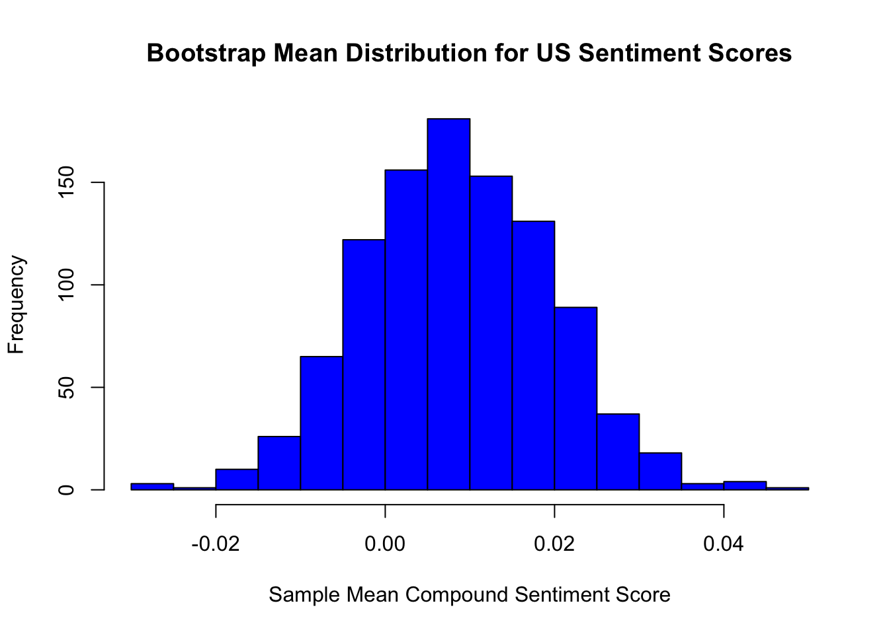

Due to the massive amounts of data in each parquet file, I chose to read in each file as a separate R statement for the sake of my laptop not exploding.
library(arrow) #Library Needed to Read Parquet Files in R
Attaching package: 'arrow'
The following object is masked from 'package:utils':
timestamp
library(dplyr)
Attaching package: 'dplyr'
The following objects are masked from 'package:stats':
filter, lag
The following objects are masked from 'package:base':
intersect, setdiff, setequal, union
# A tibble: 6 × 16
ID publishedAt `source-name` location_code location category year month
<int> <chr> <chr> <chr> <chr> <chr> <int> <int>
1 816 2020-08-07T11… Minneapolis … us United … general 2020 8
2 901 2020-08-07T11… Google News us United … general 2020 8
3 961 2020-08-07T11… CNBC us United … general 2020 8
4 1054 2020-08-07T12… Google News us United … general 2020 8
5 1147 2020-08-07T12… CNET us United … general 2020 8
6 1335 2020-08-07T13… The Washingt… us United … general 2020 8
# ℹ 8 more variables: new_title <chr>, neg <dbl>, neu <dbl>, pos <dbl>,
# compound <dbl>, sentiment_category <chr>, bias_category <chr>,
# bias_score <dbl>
Warning in FUN(X[[i]], ...): Stripping '\0' (nul) from character vector
# A tibble: 6 × 16
ID publishedAt `source-name` location_code location category year month
<int> <chr> <chr> <chr> <chr> <chr> <int> <int>
1 78 2020-08-07T03… RPP ar Argenti… general 2020 8
2 80 2020-08-07T03… La Nacion ar Argenti… general 2020 8
3 82 2020-08-07T03… La Voz del I… ar Argenti… general 2020 8
4 144 2020-08-07T06… Depor.com ar Argenti… general 2020 8
5 349 2020-08-07T08… Infobae ar Argenti… general 2020 8
6 535 2020-08-07T09… Infobae ar Argenti… general 2020 8
# ℹ 8 more variables: new_title <chr>, neg <dbl>, neu <dbl>, pos <dbl>,
# compound <dbl>, sentiment_category <chr>, bias_category <chr>,
# bias_score <dbl>
# A tibble: 6 × 16
ID publishedAt `source-name` location_code location category year month
<int> <chr> <chr> <chr> <chr> <chr> <int> <int>
1 486 2020-08-07T09… The Indian E… in India general 2020 8
2 648 2020-08-07T10… Hindustan Ti… in India general 2020 8
3 693 2020-08-07T10… Zoom in India general 2020 8
4 791 2020-08-07T11… Moneycontrol in India general 2020 8
5 902 2020-08-07T11… NDTV News in India general 2020 8
6 937 2020-08-07T11… Livemint in India general 2020 8
# ℹ 8 more variables: new_title <chr>, neg <dbl>, neu <dbl>, pos <dbl>,
# compound <dbl>, sentiment_category <chr>, bias_category <chr>,
# bias_score <dbl>
# A tibble: 6 × 16
ID publishedAt `source-name` location_code location category year month
<int> <chr> <chr> <chr> <chr> <chr> <int> <int>
1 44 2020-08-07T01… Variety ca Canada general 2020 8
2 107 2020-08-07T04… Global Villa… ca Canada general 2020 8
3 206 2020-08-07T07… Sportsnet.ca ca Canada general 2020 8
4 289 2020-08-07T08… Brandon Sun ca Canada general 2020 8
5 606 2020-08-07T10… Net Newsledg… ca Canada general 2020 8
6 612 2020-08-07T10… TheChronicle… ca Canada general 2020 8
# ℹ 8 more variables: new_title <chr>, neg <dbl>, neu <dbl>, pos <dbl>,
# compound <dbl>, sentiment_category <chr>, bias_category <chr>,
# bias_score <dbl>
1 Sample T-Test: Comparison of Sentiment Scores in US to Sentiment Scores in Russia
Within our data, Sentiment in news articles is split into 3 sections: negative sentiment, neutral sentiment, and positive sentiment, but also gives us a ‘compound sentiment score’ that grades the aritcle’s headline from a score of -1 to 1.
x <-sum(df_america$pos)y <-sum(df_america$neg)z <-sum(df_america$compound)(x-y)/z
[1] 0.3392092
a <-sum(df_russia$pos)b <-sum(df_russia$neg)c <-sum(df_russia$compound)a
[1] 7831.261
b
[1] 6727.482
c
[1] 2873.163
(a-b)/c
[1] 0.3841686
mean(df_america$compound)
[1] 0.008755018
mean(df_russia$compound)
[1] 0.02533765
H0: The mean compound sentiment score for recorded articles in the United States before 2023 is 0 (\(\mu_C =0\)) Ha: The mean of the compound sentiment score for recorded articles in the United States before 2023 is not 0 (\(\mu_C \neq 0\))
Applying Bootstrap Sampling to The T-Test
We took samples of N = 1000 articles repeated 1000 times for our 92,497 articles to use bootstrap sampling
Min. 1st Qu. Median Mean 3rd Qu. Max.
-0.029902 0.000768 0.008018 0.008440 0.016070 0.046042
#Histogram of Bootstrap Meanshist(US_Sentiment_Means, main ="Bootstrap Mean Distribution for US Sentiment Scores", xlab="Sample Mean Compound Sentiment Score", col="blue", breaks=25)

t.test(US_Sentiment_Means, mu =0)
One Sample t-test
data: US_Sentiment_Means
t = 24.164, df = 999, p-value < 2.2e-16
alternative hypothesis: true mean is not equal to 0
95 percent confidence interval:
0.007754252 0.009124981
sample estimates:
mean of x
0.008439616
If we assume alpha = 0.05, the p-value being less than 2.2e-16 allows us to reject our null hypothesis and conclude that in the United States, the average compound sentiment score of news article headlines is not 0. Futhermore, because our t-test provided us with a 95% confidence interval due to our bootstrap sampling, we can also conclude that we are 95% confident that the true average compound sentiment score for news articles in the United States is between 0.007 and 0.009.
2 Sample T-Test: United States Compound Sentiment Scores vs Russia Compound Sentiment Scores
While our 95% confidence interval shows us that the true mean compound sentiment score of the US article headlines is between 0.007 and 0.009, we’re curious to see how that compares to another country’s headlines. For this 2-Sample T-Test, we’ll be comparing the mean compound sentiment scores of article headlines in the United States with the mean compound sentiment scores of Russia’s headlines using the same bootstrap sampling parameters as our previous example with the United States.
H0: The difference between mean compound sentiment scores for articles from Russia and articles from the United States is 0 Ha: The difference between mean compound sentiment scores for articles from Russia and articles from the United States is not 0
Welch Two Sample t-test
data: Russian_Sentiment_Means and US_Sentiment_Means
t = 33.217, df = 1995.9, p-value < 2.2e-16
alternative hypothesis: true difference in means is not equal to 0
95 percent confidence interval:
0.01569524 0.01766482
sample estimates:
mean of x mean of y
0.025119650 0.008439616
Welch Two Sample t-test
data: Russian_Sentiment_Means and US_Sentiment_Means t = 33.217, df = 1995.9, p-value < 2.2e-16 alternative hypothesis: true difference in means is not equal to 0 95 percent confidence interval: 0.01569524 0.01766482 sample estimates: mean of x mean of y 0.025119650 0.008439616
Because our p-value is less than 2.2e-16, we can reject our null hypothesis at the 0.05 level and conclude that there is statistical evidence that the mean compound sentiment score of Russian article headlines is different than the mean compound sentiment score of United States article headlines. Furthermore, based on our 95% confidence interval, we can also conclude that the true difference in mean compound sentiment scores between Russian article headlines and US article headlines is between 0.015 and 0.017
ANOVA 1: Does Compund Sentiment Score Differ by Country?
While it is interesting that there is statistical evidence of a difference in mean compound sentiment scores between Russian article headlines and United States article headlines, We are curious to see if this applies to every country. Therefore, we decided to combine all of our data frames into one and ran an ANOVA test to see if this applies to every country.
H0: All counties in our data have equal mean compound sentiment scores Ha: At least one country has a different mean compound sentiment score
ANOVA 2: Does An Article’s Category Determine Its Compound Sentiment Score?
After proving that where an article is published affects its Mean Compound Sentiment Score, we became curious to see if the category/genre also affects an article’s compound sentiment score.
H0: All article categories have equal mean sentiment Ha: At least one article category has a different mean compound sentiment score
anova_compound_category <-aov(compound ~ category, data = df_all_countries)summary(anova_compound_category)
Df Sum Sq Mean Sq F value Pr(>F)
category 6 695 115.84 864 <2e-16 ***
Residuals 796677 106814 0.13
---
Signif. codes: 0 '***' 0.001 '**' 0.01 '*' 0.05 '.' 0.1 ' ' 1